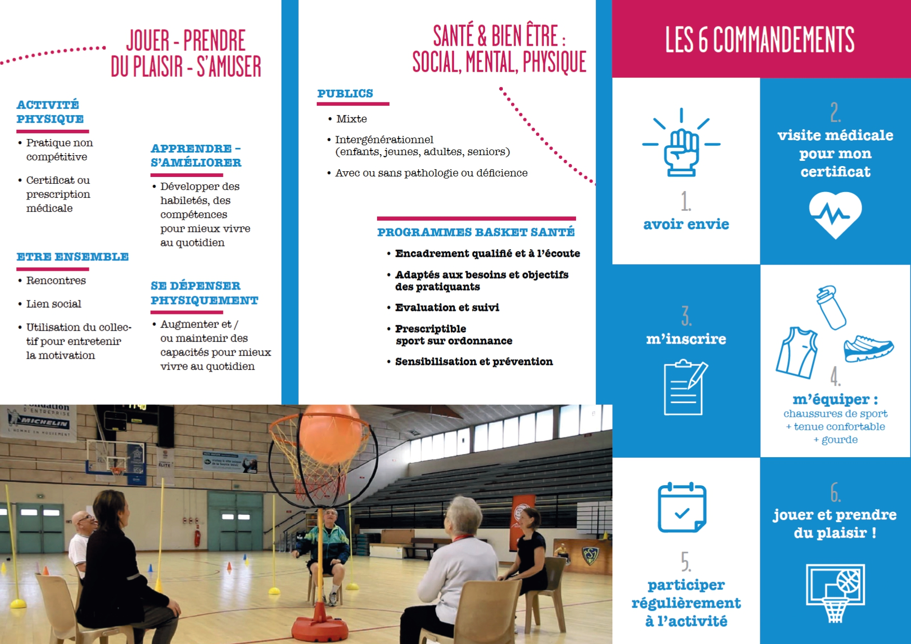
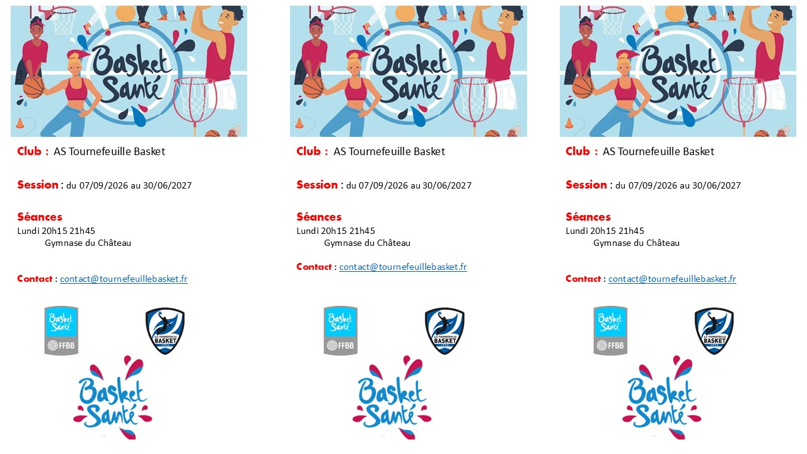

AST Basket · Une pratique adaptée
Basket Santé.
Le BASKET SANTE (nouveau concept de la FFBB) est une forme de basket adaptée à la personne (atteinte de pathologies ou non) dans le but d’améliorer ou de maintenir sa santé.
Présentation
Une activité pour chacun.
Le BASKET SANTE : – un programme fédéral validé et intégré par le CNOSF et le Ministère des Sports, – une approche à la fois préventive, curative, d’accompagnement et sociale de l’activité, – des sessions de plusieurs mois, des actions promotionnelles, identifiées par des labels.
La Fédération Française de Basket-Ball a renouvelé deux labellisations :
Labellisation Basket Santé Résolutions – 9 saisons Labellisation Structure Fédérale Basket Santé – 5 Labels

Les objectifs
Bouger et se sentir bien.
Le basket santé a plusieurs objectifs dont :
- favoriser la pratique régulière d’une activité physique,
- répondre aux objectifs de santé et/ou de bien-être de chacun,
- envisager des prescriptions médicales de l’activité Basket dans le cadre du programme « Basket Santé ».
Le basket est utilisé comme un outil ou un moyen d’améliorer son état physique, mental et social.
L’activité permet de découvrir ou de se réapproprier son corps à travers des exercices accessibles et de niveaux de pratique progressifs dans le respect de l’intégrité de chacun.
Les séances sont composées d’exercices accessibles et de niveaux de pratique progressifs de dextérité, coordination, renforcement musculaire, cardio… et du jeu 3×3 avec des règles adaptées.
Le Basket Santé en vidéo.
Vous trouverez ci-dessous des vidéos sur le Basket Santé :
Rejoignez les séances.

et n’oubliez pas le BASKET C’EST LA SANTE !
à très vite sur le terrain !
Nous contacter →